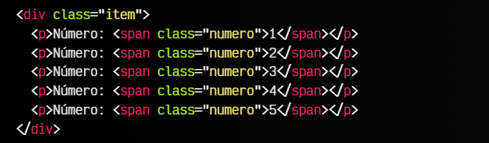
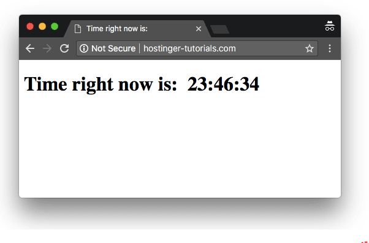

¿Qué es Javascript?
Javascript es un lenguaje de programación, o lo que es lo mismo, un mecanismo con el que podemos
decirle a nuestro navegador que tareas debe realizar, en que orden y cuantas veces (por ejemplo).
Muchas de las tareas que realizamos con HTML y CSS se podrían realizar con Javascript. De hecho,
es muy probable que al principio nos parezca que es mucho más complicado hacerlo con Javascript, y que
por lo tanto no merece la pena. Sin embargo, con el tiempo veremos que Javascript nos ofrece una
mayor flexibilidad y un abanico de posibilidades más grande, y que bien usadas, pueden
ahorrarnos bastante tiempo.
Para comprenderlo, un ejemplo muy sencillo sería el siguiente:

Imaginemos que tenemos que crear una lista de números desde el 1 hasta el 500. Hacerlo solamente con
HTML sería muy tedioso, ya que tendríamos que copiar y pegar esas filas varias veces hasta llegar a 500.
Sin embargo, mediante Javascript, podemos decirle al navegador que escriba el primer párrafo
, que
luego escriba el mismo pero sumándole uno al número. Y que esto lo repita hasta llegar a 500.
De esta forma y con este sencillo ejemplo, con HTML habría que escribir 500 líneas
mientras que con Javascript no serían más de 10 líneas.
Cómo insertar JavaScript en HTML
Si quieres mostrar contenido estático como, por ejemplo, un conjunto de imágenes,
entonces HTML puede hacer el trabajo por ti. Sin embargo, las páginas estáticas
se están convirtiendo en cosa del pasado.
La mayor parte del contenido actual es interactivo e incluye vistosas presentaciones
de diapositivas, formularios y menús. Estos elementos mejoran la experiencia
del usuario y añaden dinamismo al sitio web.
Para ello se utilizan lenguajes de scripting y JavaScript es uno de los
más famosos en este sentido. Con él, los desarrolladores pueden crear
sitios web que interactúan con el usuario y viceversa.
Aunque hay muchos otros lenguajes disponibles, ninguno es tan
popular como JavaScript. Para aprovecharlo al máximo,
se utiliza junto con HTML.
En este tutorial, te mostraremos varias formas de añadir JavaScript a HTML.
Descarga la hoja de trucos HTML definitiva
Cómo insertar JavaScript en HTML
Hay dos formas de insertar JavaScript en HTML y hacer que funcionen juntos.
Echemos un vistazo a algunas de las formas en que podemos conectar JavaScript con HTML.
Agregar JavaScript directamente a un archivo HTML
La primera forma de insertar JavaScript en HTML es directa.
Puedes hacerlo utilizando la etiqueta "script" "/script" que debe
envolver todo el código JavaScript que escribas.
Se puede agregar el código JavaScript:
Dependiendo de dónde agregues el código JavaScript en tu archivo HTML, la carga será diferente.
Por lo general se recomienda agregarlo en la sección "head" para que
permanezca separado del contenido de tu archivo HTML. Pero colocarlo
dentro de "body" puede ayudar a mejorar la velocidad de carga, ya que
el contenido del sitio web se cargará más rápido, y solo
después de eso se procesará el JavaScript.
Para este ejemplo, echemos un vistazo al siguiente archivo HTML que debe mostrar la hora actual:

En este momento, el código anterior no contiene JavaScript y, por
lo tanto, no puede mostrar la hora. Podemos agregar el siguiente código
para asegurarnos de que muestre la hora correcta:

Envolveremos este código entre "script" y "/script" y lo colocaremos
en la cabecera (head) del código HTML para garantizar que cada vez que se
cargue la página, se genere una alerta que muestre la hora actual al usuario.
Así es como se verá el archivo HTML después de agregar el código:

Si quieres mostrar la hora dentro del cuerpo (body) de la página, deberás
incluir la script dentro de las etiquetas "body" de la página HTML.
Así es como se verá el código cuando lo hagas:

Así es como se vería el resultado final:

Dificultad
Aunque Javascript es ideal en muchos casos, es mucho más complicado aprender Javascript
(o un lenguaje de programación de propósito general) que aprender HTML o CSS, los cuales
son mucho más sencillos de comprender (o al menos, su base y fundamentos).
- Antes de continuar debemos conocer varias detalles:
- Para aprender Javascript debemos conocer el lenguaje Javascript, pero no podremos
hacerlo si no sabemos programar. Se puede aprender a programar con Javascript,
pero es recomendable tener una serie de fundamentos básicos de programación antes para
que no nos resulte muy duro. - Para aprender a programar antes debemos saber como «trabaja una máquina».
Programar no es más que decirle a una máquina que cosas debe hacer y como debe hacerlas.
Eso significa que no podemos pasar por alto nada, o la máquina lo hará mal. - Para darle órdenes a una máquina debemos tener claro que esas órdenes son
correctas y harán lo que se supone que deben hacer. Si le indicamos a una máquina
los pasos para resolver un problema, pero dichos pasos son erróneos,
la máquina también hará mal el trabajo.
- Dicho esto, es necesario tener presente que aprender a programar
- Puedes copiar un programa en segundos, pero eso no significa que lo entiendas.
- Puedes comprender un programa en minutos, pero eso no significa que lo puedas crear.
- Puedes crear un programa en horas, pero eso no significa que sepas programar.
- Puedes aprender a programar en semanas, pero eso no significa que no cometas errores.
- Puedes aprender a programar bien y sin demasiados errores en meses.
es una tarea que no ocurre de un día para otro. Requiere tiempo, esfuerzo, acostumbrarse
a cambiar la forma de pensar y practicar mucho.